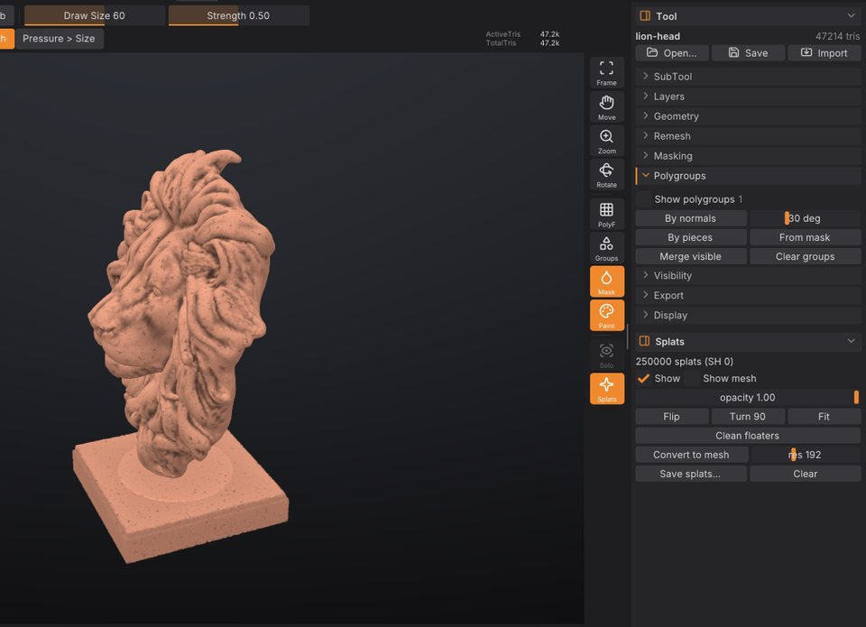

Gaussian splats
Gaussian splats are the format behind phone and photogrammetry captures from apps such as Polycam, Luma, Postshot, Scaniverse and KIRI. SculptForge uses them three ways: as a reference to sculpt against, as a source for a sculptable, animation-ready mesh with its colours, and as an output when you turn a sculpt into splats. This chapter covers all three.


To make a splat yourself from a phone video or photos, see Scan an object into a splat.
Supported files#
| Format | Open | Save |
|---|---|---|
| PLY (standard 3D Gaussian Splatting layout, spherical harmonics up to degree 3) | Yes | Yes |
.splat (compact web-viewer format) | Yes | Yes |
glTF / GLB with KHR_gaussian_splatting | Yes | Yes |
OpenUSD .usda / .usdz with a ParticleField3DGaussianSplat prim | Yes | Yes |
A PLY file can hold either a mesh or splats; SculptForge tells them apart by their contents.
Load a capture as a reference#
- Open the capture with File > Open... (Ctrl+O), drop it onto the window, or double-click it in the LightBox Splats tab.
- The splats load next to your sculpt: the current mesh stays, and the capture is drawn around it as a reference.
- The Splats palette moves into the right tray by itself, and a Splats button appears on the right shelf to show or hide the capture.
Most captures arrive upside down, off-centre and at an arbitrary scale. Use the buttons in the Splats palette to place them:
| Button | What it does |
|---|---|
| Flip | Turns the capture upside down (180 degrees about X). Most captures need this |
| Turn 90 | Turns it 90 degrees about the vertical axis |
| Fit | Centres it at the origin and scales it to the size of a new sphere |
| Clean floaters | Removes faint splats and stray outliers around the subject |
The palette also shows the number of splats and their spherical-harmonic degree (for example "1250000 splats (SH 3)"), and has:
- Show and Show mesh to show or hide the capture and the sculpt.
- An opacity slider (0.05 to 1) to see the sculpt through the capture.
Make a capture sculptable#
Make sculptable (under From scan in the Splats palette) turns the capture into a clean SubTool you can sculpt and animate: a watertight surface without floaters, quad topology with loops round the eyes and mouth when it is a head, and the capture's colours. The splats stay, hidden. It has its own chapter: From scan to sculptable mesh.
Turn a sculpt into splats#
Sculpt to splats (in the Splats palette when no splats are loaded, or from the command palette) covers the visible SubTools with flat, oriented splats with soft clay shading baked in. Use it to show a sculpt in splat viewers, web scenes or engines that render 3D Gaussian splats. It replaces any loaded splats.
From a script you can choose the number of splats and whether to bake shading:
sculptforge-cli -c 'open path=bust.glb; mesh_to_splats count=500000 shading=true; splat_save path=bust.ply'Save splats#
Click Save splats... in the Splats palette, or File > Save Splats.... Choose the format by the file type: PLY (for SuperSplat, Postshot and most tools), glTF (.glb with KHR_gaussian_splatting) or OpenUSD (.usda / .usdz). The splat_save command also writes .splat.
Placement you made with Flip, Turn 90 and Fit is kept exactly in glTF and USD. PLY has no placement, so it is baked into the splats; if the capture was rotated, view-dependent colour (spherical harmonics above degree 0) is dropped from the PLY, because it would point the wrong way.
When you export USD (File > Export USD / USDZ...) with splats loaded, they are included in the same file as a ParticleField3DGaussianSplat prim next to the meshes.
Projects (.sfproj) keep loaded splats and their placement.
Clear in the Splats palette removes the capture.
From scripts#
| Command | What it does | Key parameters |
|---|---|---|
open | Loads a capture as a reference next to the sculpt | path |
splat_info | Reports the loaded splats | |
splat_transform | Rotates and places the capture | rotate_x, rotate_y, rotate_z (degrees), fit, reset |
splat_clean | Removes faint splats and floaters | min_opacity (default 0.05), keep (0.5 to 1, default 0.98) |
splat_to_mesh | Make sculptable: a new SubTool with quads, face loops and colour (details) | detail (default 256), preset (game, film, sculpt), color (polypaint, texture, none), crop, face_guides |
splat_test_capture | Loads a built-in test capture (a head or a mug) | kind |
mesh_to_splats | Turns the visible SubTools into splats | count (default 250000), shading (default true) |
splat_save | Saves .ply, .splat, .glb, .usda or .usdz | path |
splat_clear | Removes the splats |
A complete phone-capture-to-game-asset pipeline:
sculptforge-cli -c 'open path=scan.ply; splat_transform rotate_x=180 fit=true; splat_to_mesh preset=game color=texture; export_glb path=asset.glb'To render only the splats headless, use sculptforge scan.ply --render scan.png --hide-mesh (see Scripting and automation).
See also#
- From scan to sculptable mesh: Make sculptable in detail
- Image and text to 3D: another way to get a base mesh
- Subdivide, Remesh, Decimate and LODs: clean up a converted mesh
- Exporting: USD and glTF exports that carry splats